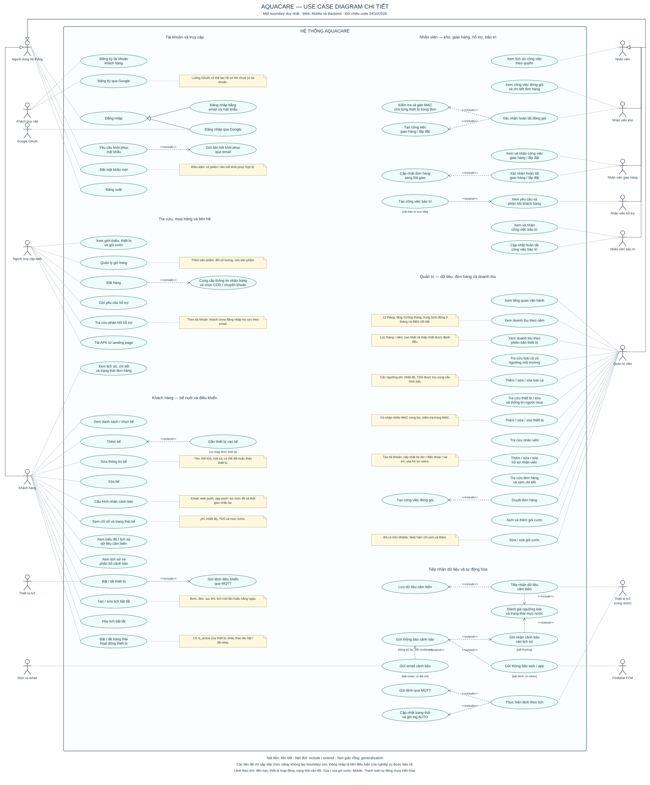

<!doctype html><html lang="vi"><meta charset="utf-8"><meta name="viewport" content="width=device-width,initial-scale=1"><title>AquaCare — một boundary</title><style>body{margin:0;font:16px Arial;background:#edf4f5;color:#17364a}header{position:sticky;top:0;background:white;padding:14px 24px;box-shadow:0 2px 8px #0002}button,a{margin-right:14px;color:#087d78}main{overflow:auto;height:calc(100vh - 100px);padding:20px}img{display:block;width:2200px;max-width:none;background:white}h1{font-size:21px;margin:0 0 10px}</style><header><h1>AquaCare — toàn bộ use case trong một boundary</h1><button onclick="zoom(.8)">− Thu nhỏ</button><button onclick="zoom(1.25)">+ Phóng to</button><button onclick="document.querySelector('img').style.width=(innerWidth-50)+'px'">Vừa chiều ngang</button><a href="aquacare-unified.svg">SVG</a><a href="aquacare-unified.png">PNG</a><a href="aquacare-unified.puml">PlantUML</a></header><main></main><script>function zoom(f){const i=document.querySelector('img');i.style.width=(i.getBoundingClientRect().width*f)+'px'}</script></html>